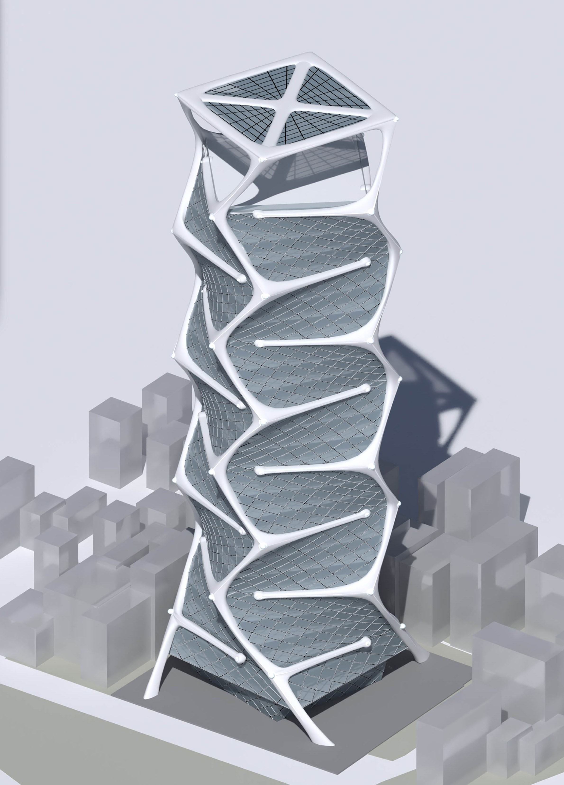
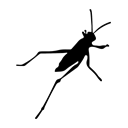
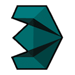
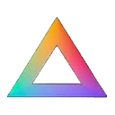

First-person, third-person & VR
Immersive walkthroughs of the interior and exterior, ready for virtual reality reviews.
Architect · Computational Designer
Deconstructing complex geometry.
02Manifesto
Bridging the gap between algorithmic precision and freeform fluidity. Every fluid form is an emergent system, shaped by the unseen currents and forces it encounters.
I specialize in the computational transition from raw, fluid architectural concepts to structurally coherent, high-fidelity digital systems.
I collaborate with architects as a co-creator, exploring bold concepts and iterating toward refined design solutions across façades, interiors and furniture.
03Selected Work
A museum conceived as one continuous, fluid form. Explored through parametric systems in Rhino and Grasshopper, and brought to life as a real-time, interactive experience in Unreal Engine.
01 · Form
The envelope emerges as a single surface, form-found parametrically in Rhino and Grasshopper.
02 · Skin
Grasshopper and Rhino drive dynamic façades and adaptive systems. Two façade options, every iteration pushing the idea further.
03 · Atrium
Sleek curves and seamless surfaces, explored through multiple design variations of the same space.
04 · Surface
Furniture options, each one shown from its closest detail to the full piece.
05 · Panels
Customizable panels in GRC and ultra-high-performance concrete, where computational rigor meets striking visuals.
Design options of the same spaces, rendered in real time.
Built in Unreal Engine
With a Meta Quest headset and VR controllers, step directly into the architectural vision for a fully immersive exploration. Feel the scale, light and spatial dynamics as if you were physically there, and go through design options in real time.
Immersive walkthroughs of the interior and exterior, ready for virtual reality reviews.
Blueprint-driven menus swap façade options and exterior and interior paneling with a click, for live side-by-side comparison.
Concrete, GRG, GRC or wood. Material studies on the fly, plus interactive sliding and rotating door systems.
04Concept work

05Interiors
06Films
Cinematic fly-throughs of fluid, parametric interiors, exteriors and landscape.
Animation
Animation
Real-time exploration of the same fluid architecture: in virtual reality, first-person and third-person.
Unreal Engine · VR
Unreal Engine · Interactive
Unreal Engine · Interactive
07About
My work spans the entire architectural spectrum, from residential villas to cultural centers and museums, encompassing both elegantly simple contemporary designs and daring, fluid forms.
I collaborate with architects to explore bold design concepts and iterate toward refined design solutions. As a Computational Designer specializing in complex geometry and parametric systems (Rhino/Grasshopper) for avant-garde architectural projects, I translate daring concepts into high-fidelity exterior and interior visualizations and animations.

Grasshopper
3ds Max
Magnific AI